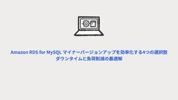
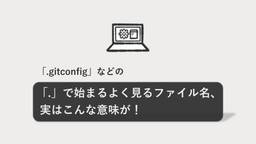
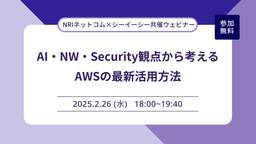

Technology - NRIネットコムBlog
https://tech.nri-net.com/archive/category/Technology
NRIネットコム社員が業務で利用している幅広い技術やナレッジについて紐解くブログメディアです。
フィード

Amazon RDS for MySQL マイナーバージョンアップを効率化する4つの選択肢：ダウンタイムと負荷削減の最適解
Technology - NRIネットコムBlog
はじめに チームにおけるMySQL マイナーバージョンアップの課題 現状の構成・運用方法 主な課題 最適な選択肢を考える ① マルチAZ DBクラスター移行 ② マルチAZ DBクラスター移行 ＋ RDS Proxy追加 ③ ブルー/グリーンデプロイ ④ Amazon Aurora 移行 4つの選択肢のまとめ 最後に 参考URL はじめに こんにちは、永川です。普段はインフラエンジニアとしてシステム開発・運用に携わっています。 今回は「Amazon RDS (以下 RDS) の MySQL マイナーバージョンアップ作業」に焦点を当て、ダウンタイム削減や運用負荷軽減を目的とした選択肢を検討した内…
6日前
理解モデルAmazon Nova Proで画像生成を検証・再試行する(Amazon Nova Canvas編)
Technology - NRIネットコムBlog
小西秀和です。 以前の記事では、Anthropic Claude 3.5 Sonnetの画像理解・分析機能を活用して、Amazon Titan Image Generator G1で生成した画像を検証・再生成するAmazon Bedrockの使用例を紹介しました。 Amazon BedrockでClaude 3.5 Sonnetの画像理解・分析機能を使用して画像生成を検証・再生成・自動化する(Amazon Titan Image Generator G1編) 本記事では、マルチモーダルの理解モデルであるAmazon Nova Proを活用して、Amazon Nova Canvasで生成した画像…
6日前

「.gitconfig」などの「.」で始まるよく見るファイル名、実はこんな意味が！ 1
1
Technology - NRIネットコムBlog
こんにちは。社会人1年目の福田です。 突然ですが私は学生時代情報系を専攻していたので、 「プログラムは多少できるしIT企業に入って仕事ができる人材として頑張るぞ～！」 的な感じで弊社に入社しました。（もちろんちゃんとした志望理由はありますが、ここで話すと長くなってしまうので割愛。） 約4ヶ月の研修を終え、配属されてから3ヶ月が経とうとしている今、「配属されてから、どう？」と聞かれて真っ先に頭に浮かんだのは 開発環境構築むずっ でした。 学生時代は自分のPCにOSバージョンを合わせて好きにツールを入れて、動けばOKだったのですが、社会人は当然違います。 会社のルールのもと、業務で使用するという責…
6日前

【NRIネットコム×シーイーシー共催ウェビナー】 AI・NW・Security観点から考えるAWSの最新活用方法
Technology - NRIネットコムBlog
こんにちは、ブログ運営担当の海野です。 2/26（水）18:00～19:40 NRIネットコムと株式会社シーイーシー様共催ウェビナー「AI・NW・Security観点から考えるAWSの最新活用方法」が開催されます!! 今回はNRIネットコムと株式会社シーイーシー様がコラボし、生成AIやネットワーク、コンテナ、セキュリティなど、様々な角度からAWSのナレッジを共有します！ AWS活用における実践的なノウハウや貴重な経験談を、この機会にぜひ手に入れてください！ 開催日時 2025年2月26日（水）18:00～19:40 開催方式 ZOOM ウェビナー 参加費 無料 【1本目】 Amazon Q D…
7日前
AWSインターフェースの統合進化論：CLIからAmazon QまでのUIの変遷と開発者体験の革新 ～NRIネットコム TECH AND DESIGN STUDY #57～ 1
Technology - NRIネットコムBlog
こんにちは、ブログ運営担当の海野です。 2/19（水）19:00～20:00 当社主催の勉強会「NRIネットコム TECH & DESIGN STUDY #57」が開催されます!! 今回のTECH & DESIGN STUDYでは、当社クラウドエンジニアが「AWSを操作するユーザーインターフェースの15年にわたる進化」を体系的に解説します！ 登壇者 志水友輔 NRIネットコム株式会社 クラウドアーキテクト 2023,2024 Japan AWS Ambassador 2024 AWS Community Builder 2021,2023,2024 Japan AWS Top Engineer…
7日前

AWS Jamに参加してみた
Technology - NRIネットコムBlog
AWS re:Invent 2024にてAWS Jamに参加しました こんにちは、高橋涼です。 2024年12月に開催されたAWS re:Invent 2024に参加しました。 AWSも英語も初心者の私ですが、イベント参加する際にインプットだけではなく、アウトプットすることも自身の目標としていたため、AWS Jamにチャレンジしてきました。 初心者でも参加してよかったと思えたので「AWS Jamとはなにか」と、参加してみての感想などをまとめます。 AWS Jamとは 特定の分野について与えられた課題をこなしていくことでAWSのベストプラクティスを学びながらアウトプットをすることができるハンズオ…
9日前
IT未経験の新社会人が1年目に取得した資格を振り返ってみた
Technology - NRIネットコムBlog
はじめに 取得した資格 資格取得の流れ 基本情報・応用情報 基本情報技術者試験 応用情報技術者試験 Google Analytics Individual Qualification AWS Certified Cloud Practitioner HTML5プロフェッショナル認定試験 Level1 おわりに はじめに はじめまして、最近家に帰ってきて1時間だけソファで寝ようと思っていたら、3時間半も寝落ちしていた荒木です。齢23にして体力の衰えを感じています... 簡単に自己紹介をします。 文系（経営学部）出身、IT未経験の新社会人 フロントエンド領域で主にコーディングを担当 本記事では、文…
10日前
AWSマンスリーアップデートピックアップ!! 2025年1月分 ～NRIネットコム TECH AND DESIGN STUDY #56～
Technology - NRIネットコムBlog
こんにちは、ブログ運営担当の小野です。 2/12（水）12:00～12:30 当社主催の勉強会「NRIネットコム TECH & DESIGN STUDY #56」が開催されます!! 今回のTECH & DESIGN STUDYでは、日々数多く発表されているAWSのアップデートのうち、当社の腕利きエンジニア目線で厳選した前月のアップデート情報をお話させていただきます! 登壇者 梅原航 クラウドエンジニア 2024 Japan AWS Jr. Champions 執筆したブログ：https://tech.nri-net.com/archive/author/k-umehara 日程・タイムスケジュ…
12日前
Vue.jsを用いてSPA開発してみた
Technology - NRIネットコムBlog
本記事は ブログ書き初めウィーク 最終日の記事です。 📝 8日目② ▶▶ 本記事 📅 はじめに SPA(Single Page Application)とは SPAの基本的な仕組み SPA開発に適したフレームワーク Vue.jsとは Vueの構成 今回利用した環境 Node.jsのインストール Vue CLIのインストール npm (Node Package Manager) Vue.jsで使用できるUIフレームワーク BootstrapVue Vuetify 実装例 モーダル画面の作成 画面表示 まとめ はじめに はじめまして！入社1年目の堺です。 新しい社内システムの開発に携わることになり…
13日前
手動は卒業！AWS Lambdaによるレポート作成自動化
Technology - NRIネットコムBlog
はじめに やってみた 今回やりたいこと 使用する技術 構成 実装の流れ 出力イメージ つまずきポイント おわりに はじめに こんにちは、クラウド事業推進部一年目の山本です。 クラウド事業推進部の中でもインフラ系のチームに配属されて、分からないことだらけですが、日々多くの学びを吸収しています。 いきなりですが「インフラ」と聞くと、縁の下の力持ちのようにアプリを裏側から支えていくようなイメージが想像できます。そうなると、業務としてはシステムを安定的に稼働させる運用業務が多くなります。この運用業務には、毎月決まってやらなければならない作業（以下、月次作業という）があり、案件の増加に比例して月次作業も…
14日前
インフラ編Part1 ～ニュース定期通知機能～
Technology - NRIネットコムBlog
本記事は ブログ書き初めウィーク 8日目②の記事です。 📝 8日目① ▶▶ 本記事 ▶▶ 9日目 📅 本記事は、こちらの記事の続きとなっております。 tech.nri-net.com 前提条件 全体構成図 ニュース定期通知機能 AWS Lambda IAMロール Lambdaレイヤー S3 EventBridge 宣伝と次回予告 では、実際に開発を始めていきましょう。 前提条件 以下の説明は省略させていただきます。 LINE DevelopersでのChannel作成済み LINE Messaging APIでChannelアクセストークンとシークレットキーは発行済み VPC、サブネット(今回…
14日前
新米エンジニアの挑戦 : インフラからアプリまでの旅路
Technology - NRIネットコムBlog
本記事は ブログ書き初めウィーク 8日目①の記事です。 📝 7日目 ▶▶ 本記事 ▶▶ 8日目② 📅 はじめに システム概要 ユーザー側機能 開発者側機能 はじめに こんにちは！サッカーを愛する新米エンジニアの井手亮太と申します！ 現在、AWSを扱うインフラエンジニアとして働いています。タイトルの通り、今回私はインフラだけではなく、専門外であるアプリ分野に挑戦していきます！ ではなぜ、専門外の分野に取り組もうと思ったのか。 理由はずばり、 アプリとインフラの境界が曖昧になってきている と感じたからです。 これ、IT業界でよく言われている話ですよね？ 実際、自分もこのような話は知っていましたが、…
14日前
IT業界に内定してから受験した資格11個についてまとめてみた
Technology - NRIネットコムBlog
はじめに これまで受験した資格 資格の受験理由と難易度(主観) 応用情報技術者試験 ★★☆☆☆ 基本情報技術者試験 ★☆☆☆☆ 情報処理安全確保支援士 ★★★★☆ Google アナリティクス個人認定資格試験 ★☆☆☆☆ AWS Certified Cloud Practitioner ★☆☆☆☆ データベーススペシャリスト ★★★★★ AWS Certified Solutions Architect - Associate ★★★☆☆ AWS Certified Developer - Associate ★★☆☆☆ AWS Certified Data Engineer - Associ…
15日前
新入社員が思うGitコンフリクトを減らすポイント
Technology - NRIネットコムBlog
本記事は ブログ書き初めウィーク 7日目の記事です。 📝 6日目 ▶▶ 本記事 ▶▶ 8日目 📅 はじめに 上京して関東のライブ会場にもすぐ行けるようになり、オタク活動が加速している新人の中塚です。 大学では生殖補助医療学を専攻しており、マウスや人の血液を使って不妊治療の研究をしていました。 現在はIT未経験からフロントエンドエンジニアを目指し、Reactを学びながら画面実装のスキルを磨いています。 そんな私が、現場で最も苦労したのがGitです。Gitを使い始めたばかりの私が、コンフリクトを減らすポイントを皆さんに共有できればと思います。 これからGitを学ぼうとしている方や初心者の方に、少し…
15日前
Spring Batchについて基礎からまとめてみた
Technology - NRIネットコムBlog
本記事は ブログ書き初めウィーク 6日目の記事です。 📝 5日目 ▶▶ 本記事 ▶▶ 7日目 📅 はじめに そもそも「バッチ」ってなに？ Spring Batchの基本構成とは？ JobRauncher Job Step Taskletモデル Chunkモデル Job Repository Platform Transaction Manager Spring Batchでバッチを実装していく 実行環境 ① テーブルとCSVファイルを作成する ② Modelを作成する ③ ItemProcessorを実装する ④ ジョブをまとめるクラスを実装する ⑤ 通知を受け取るリスナーを実装する ⑥ メイ…
16日前
新人アプリケーションエンジニアがマイクロサービスアーキテクチャを構築してみた【 Java × Python 】
Technology - NRIネットコムBlog
本記事は ブログ書き初めウィーク 5日目の記事です。 📝 4日目 ▶▶ 本記事 ▶▶ 6日目 📅 はじめに マイクロサービスアーキテクチャとは？ マイクロサービスアーキテクチャのメリット 実装するアプリケーションの構成 簡易アプリケーションの概要 Java の 実装 Controller の作成 API クライアントの作成 その他のクラス Form (ユーザが入力した内容を保持するクラス) Model （Python からの JSON 形式のレスポンスをオブジェクトとして受け取る） Service （Python から受け取ったデータの処理） 実行用のクラス Python の実装 Thymel…
17日前
AWS re:Inventの歩き方を初心者なりにまとめてみた
Technology - NRIネットコムBlog
はじめまして、高橋涼です。 先月ラスベガスで開催されたAWS re:Invent 2024に参加してきました。 今後参加しようとしている方向けに歩き方を簡単にまとめます。 AWS re:Inventとは Amazon Web Services主催のAWS最大のカンファレンスです。 毎年12月初旬にラスベガスで開催される参加者6万人ほどの超大規模なイベントです。 新サービスや既存サービスのアップデート情報などが発表されたり、ワークショップが開かれます。 会場内に設置されたAWSの巨大ロゴ 渡米に向けて イベントのチケットには飛行機のチケットやホテル宿泊は含まれていません。 個人で飛行機やホテルを…
20日前
Fargateメンテナンスの自動適用について調べた
Technology - NRIネットコムBlog
本記事は ブログ書き初めウィーク 4日目の記事です。 📝 3日目 ▶▶ 本記事 ▶▶ 5日目 📅 はじめに Fargateメンテナンスと向き合うモチベーション Fargateメンテナンスとは？ Health Dashboard Fargateメンテナンスはどのように適用されるのか？ スタンドアロンタスクは廃止される サービスタスクの置き換え手順 手動適用 自動適用 適用単位と時間 タスク置き換え時の通知設定 さいごに はじめに こんにちは。加藤です。 最近、Fargateメンテナンスの運用を「手動適用」から「自動適用」に任せる運用に改善しました。本ブログ記事では、改善対応の中で調査したFarg…
20日前
re:Invent2024セッションレポート_Amazon RDS への Db2移行ベストプラクティス
Technology - NRIネットコムBlog
はじめに こんにちは、クラウド事業推進部の今村です。 re:Invent2024 から帰国後は英語学習を頑張っています。 今回は企業経営に必要不可欠な基幹業務システムで利用されることが多いデータべースの Db2 を RDS 上で利用可能にした RDS for Db2 の移行ベストプラクティスに関する re:Invent2024 セッションレポートです。 RDS for Db2 は re:Invent2023 で発表された比較的新しいサービスです。また、利用するには Db2 のライセンスが必要となるためか、ネット上に操作してみた方の情報等がネット上になかなか出ていないと感じていました。 私自身、…
21日前
元アプリ志望が語る、インフラエンジニアの魅力
Technology - NRIネットコムBlog
本記事は ブログ書き初めウィーク 3日目の記事です。 📝 2日目 ▶▶ 本記事 ▶▶ 4日目 📅 はじめに そもそもインフラエンジニアってなに？ インフラエンジニアのイメージとギャップ インフラエンジニアのイメージ 実際の仕事 インフラエンジニアのやりがい 「システムが安定稼働できるようなったら、インフラエンジニア暇じゃね？」 私がインフラエンジニアに向いていると感じた部分 1. タスクの性質 2. 作業の性質 希望の配属にならなかった方々へ 過度に落ち込まず、一旦受け入れてみましょう。 おわりに はじめに こんにちは。入社1年目のひよっこインフラエンジニアの中村です！ 私は入社前に少しだけシ…
21日前
【AWS re:Invent 2024】セッションレポート_スケーラブルな生成AIアプリケーションのためのマルチエージェントの使用
Technology - NRIネットコムBlog
はじめに セッション概要 シングルエージェントの課題 ①エージェントの機能が複雑化する 処理のブラックボックス化 エージェントの処理自体が遅くなる ②エージェントがサイロ化する Amazon Bedrock マルチエージェントコラボレーション スーパーバイザーエージェントとは ルーティングの方法 スーパーバイザーモード ルーティング付きスーパーバイザーモード マルチエージェントコラボレーションのメリット 複数のエージェントをまたいだ可観測性・可視性 効率的なルーティング 複雑なワークフローの自動化 ナレッジベースの利用 エージェント機能のスケーラビリティ 終わりに 参考 はじめに こんにちは、…
21日前
AWS re:Inventの女子会参加レポ
Technology - NRIネットコムBlog
こんにちは、システムエンジニアの檀上です。 普段は顧客の社内システムの要件調整・基本設計などを担当しています。 さてこの度、アメリカ ラスベガスで開催されたAWS re:Invent 2024に参加させていただきました。 そこで、「AWS Women of the Cloud」という取組みの一環のセッションに参加したので、レポートします。 "AWS Women of the Cloud"とは？ IDE110 "Women of the Cloud networking reception" IDE111 "Women Walk the Floor with AWS Women of the C…
22日前
大規模システムを知るために、まず監視を学んだ話
Technology - NRIネットコムBlog
本記事は ブログ書き初めウィーク 2日目の記事です。 📝 1日目 ▶▶ 本記事 ▶▶ 3日目 📅 こんにちは、NTシステム事業二部 基盤課 の玉邑です。 2024年7月にNRIネットコムに入社し、AWS上に構築された大規模システムのインフラチームリーダーを担当しています。お客様のビジネスの変化に迅速に対応するため、DevOpsで開発を行いながら、安定稼働を支えるSREを担当しています。 15年以上にわたりインフラエンジニアやクラウドアーキテクトとしてキャリアを積んできましたが、現在担当しているシステムはこれまでで最も規模が大きいものです。今回の記事では、入社してからどのようにしてその大規模シス…
22日前
【re:Invent2024】セッションレポート_Amazon ECSを使ったベストプラクティス
Technology - NRIネットコムBlog
こんにちは、梅原です。re:Invent2024の参加からもう一ヶ月たったとは信じられません。 本記事は、re:Invent2024で参加した｢Amazon ECS & AWS Fargateを使ったセキュアでパフォーマンスに優れたアプリケーションの構築｣というChalk talkについてのセッションレポートです。 SVS332-R Build secure & performant apps easily with Amazon ECS & AWS Fargate AWS Well-Architectedの4つの柱の観点を、ECS上のアプリケーションでどのように満たすかというセッション内容で…
1ヶ月前
2024 Japan AWS Jr. Championsに選出いただいて活動した直近1年間のAWSコミュニティ活動を振り返って思うこと
Technology - NRIネットコムBlog
はじめに 書籍執筆 外部向け勉強会での登壇活動 AWSマンスリーアップデートピックアップ!!AWS re:Invent2024特別編 AWS環境におけるランサムウェア攻撃対策の設計 Amazon Bedrockの活用と注意点 AWSマンスリーアップデートピックアップ！！ 2024年11月分 一歩進んだAWSのコスト削減 ガードレールの有用性とリスク対策 AWSマンスリーアップデートピックアップ！！ 2024年8月分 AWS Firewall Managerを効果的に活用したマルチアカウント管理方法 AWS Security Hubを活用した効率的でセキュアなマルチアカウント管理 Amazon …
1ヶ月前
AWS re:Invent 2024 で考えるAWSマルチアカウント管理における複雑性とシンプルな設計 ～AWS Organizations の活用と組織管理に関するアップデート～ ～NRIネットコムTECH AND DESIGN STUDY #55～
Technology - NRIネットコムBlog
こんにちは、ブログ運営担当の小野です。 1/22（水）12:00～13:00 当社主催の勉強会「NRIネットコム TECH & DESIGN STUDY #55」が開催されます!! こんな方におすすめ ・AWSアカウントを1つで管理している方（シングルアカウント管理） ・AWSアカウントを2つ以上利用する機会がある方（マルチアカウント管理） ・AWSマルチアカウント管理や組織管理について知りたい方 登壇者 丹 勇人（たん はやと） 秋田県出身 2024 Japan AWS Ambassadors（Associate Ambassador） 2022 APN AWS Top Engineers（…
1ヶ月前
API初心者がBacklogにお天気情報を表示させてみた
Technology - NRIネットコムBlog
はじめに 課題：お天気情報をAPIで受け取り、Backlogの課題に今日のお天気情報を表示させてみよう⛅ その１：Postmanを使って必要なAPIを選定しよう📮 ①気象庁APIから必要なAPIを選定しよう⛅ ②BacklogAPIから必要なAPIを選定しよう📝 その２：Backlogの課題を追加しよう📋 ①気象庁APIから情報を取得する ②BacklogAPIの課題追加APIを呼び出す まとめ はじめに はじめまして。新入社員の桑野です。 配属当初、APIについて理解するためにBacklogAPIを使用して実際にAPIの受け渡しを実践してみたので、今回はその内容についてお伝えしたいと思います…
1ヶ月前
3週間でAWS Certified AI Practitionerに合格～日本語だけで大丈夫！～
Technology - NRIネットコムBlog
はじめに AWS Certified AI Practitionerとは？ 私のスキルレベル 勉強方法 AWS公式で試験の概要を理解しよう！ 機械学習にまつわる概念及びAWSをインプットしよう！ Udemyの模擬試験でアウトプットしよう！ (番外編)Notionを使おう！ 実際に使用した方法 Notionのメリット Notionのデメリット 最後に はじめに こんにちは！新入社員の松澤武志です！ ブログも3本目になったのでもうご存じの方もいるかもしれません（？） 突然ですが、この度AWS Certified AI Practitionerに合格することができました！ ただ、2024年12月現在…
1ヶ月前
SCP・RCP・宣言型ポリシーの違いを簡単に整理してみた
Technology - NRIネットコムBlog
はじめに 承認ポリシーと管理ポリシー SCP（サービスコントロールポリシー） RCP（リソースコントロールポリシー） 宣言型ポリシー ポリシーの適用を自動化する おわりに はじめに こんにちは、大林です。2024年11月と12月に、RCP（リソースコントロールポリシー）および宣言型ポリシーが発表されました。 AWS Organizations におけるポリシーの発展が進む中で、「SCP（サービスコントロールポリシー）とどう違うのか」、「それぞれのポリシーをどのように使い分けるべきか」と疑問に思う方も多いのではないでしょうか。 そこで今回のブログでは、SCP・RCP・宣言型ポリシーの違いを整理し…
1ヶ月前
ネットワーク初学者が知っておきたいDNSの基礎知識：負荷分散の仕組み
Technology - NRIネットコムBlog
はじめに DNSはどうやって膨大なトラフィックを処理しているのか DNSにおける階層構造とは 1. ルートDNSサーバ 2. トップレベルドメイン(TLD)DNSサーバ 3. セカンドレベルドメインDNSサーバ DNSの名前解決の流れ ルートDNSサーバの負荷分散 まとめ はじめに こんにちは、新入社員の小筆です。 私は入社した当初、ネットワークについての知識をほとんど持っていませんでした。 しかし業務でAWSを操作する機会があり、サービスの使い方を学ぶ以前にネットワークの根本的な仕組みを理解する必要があると感じました。 ネットワークの基礎を勉強していく中で、特に興味を持ったのがDNSでした。…
2ヶ月前